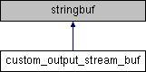

Vowpal Wabbit
Main Page
Namespaces
Classes
Files
Wiki
Class List
Class Index
Class Hierarchy
Class Members
Public Member Functions
|
List of all members
custom_output_stream_buf Class Reference
#include <error_reporting.h>
Inheritance diagram for custom_output_stream_buf:

Public Member Functions
custom_output_stream_buf
(void *trace_context,
trace_message_t
trace_listener)
virtual int
sync
()
Constructor & Destructor Documentation
custom_output_stream_buf::custom_output_stream_buf
(
void *
trace_context
,
trace_message_t
trace_listener
)
inline
Member Function Documentation
virtual int custom_output_stream_buf::sync
(
)
inline
virtual
The documentation for this class was generated from the following file:
/__w/vowpal_wabbit/vowpal_wabbit/vowpalwabbit/
error_reporting.h
Generated on Thu Feb 11 2021 20:18:35 for Vowpal Wabbit by
1.8.11
 1.8.11
1.8.11